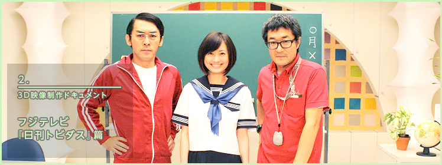
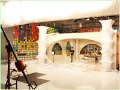
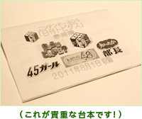
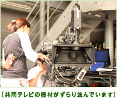
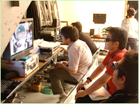
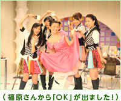
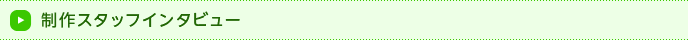
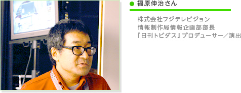
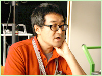
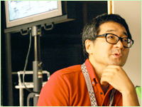

ここは東京・お台場、フジテレビのスタジオ。『いつの間にテレビ』で毎日配信中の情報3Dコント映像『日刊トビダス』の収録が行われている現場に潜入しました。
まさにニンテンドー3DSの画面で見たのと同じセットです。
スタジオの中は思っていたよりずっと広々としていて、セットもとても大きい印象です。天井は3〜4階建てのビルくらいの高さがありそうです。

メイクを済ませた出演者のみなさんが次々と入っていらっしゃいました。N.O.M取材陣は、みなさんのお邪魔にならないよう、横からこっそり様子をうかがいます。

福原プロデューサーを囲んで、台本を実際に声に出して読みながら確認されています。ここで台本にないセリフや演技が加わったりすることもあるようで、このときは「金剛地さんこれギターで弾けますよね？（福原）」「えっ！？ じゃあいま練習します（金剛地）」なんてやりとりも聞こえました。
この間、技術面を担当する共同テレビのスタッフのみなさんは、カメラの位置やシーンの流れの中での動かし方、そしてセットの配置などを念入りにチェックされています。

3D撮影に使われるカメラは、もちろん特別製のもの。よく見るとカメラが2台ついていて、角度が微妙に異なるふたつの映像を同時に撮影できるようになっています。これが3Dで立体的に見える秘密なのです。
真剣かつ和気あいあいとした打ち合わせは15分ほどであっという間に終了。カメラやセットのセッティングもOKのようです。リハーサルが始まりました。

本番と同じ環境でカメラを入れてスタート。撮影チェックも行われます。出演者のみなさんの演技やアドリブが面白くても、終わるまで声を出して笑ってはダメなのでガマンするのが大変です。
福原プロデューサーは、3Dモニターで立体感の確認と、演出・演技のすべてを同時にチェックされています。1回の通しのリハーサルが終わるごとにセットの方に移動して、出演者や各スタッフのみなさんに指示を出します。リハーサルを重ねるごとに、どんどん面白くなっていくのが素人目で見てもわかります。そして、いよいよ本番です！

ワンコーナー3〜4回分を収録して、所要時間は1時間ほど。短時間でたくさんの人が、それぞれにベストのパフォーマンスを出してOKが出るまでの流れは、まさにプロフェッショナルです。
この日は夜遅くまで、こんな密度の濃い収録が、衣装とセットを変えてくり返し行われました。実際の映像では、さらに3Dのテロップも入るはずなので、どんな風になるのか楽しみです。みなさんもニンテンドー3DSで『日刊トビダス』を、ぜひ見てみてください！



――
これまで3D撮影のご経験は？
福原
3D撮影自体を番組で採り上げたことはありましたが、こんなに本格的に使うのは初めてです。機材もあんまり見たこともないようなカメラで。最初はスタジオにニンテンドー3DSを持ち込んでいたりもしたんですが、もう結構な回数収録を重ねているので、大分いろいろわかってきた感じです。
――
番組の方も回を重ねるごとに立体感が増している印象があります。
福原
奥行きが足りないなということで、セットも追加したりしてるんですよ。どういう風にカメラを動かしたらいいかとか、どんな角度で写したり、どうモノを配置すると立体感が出るかとか、試行錯誤しながら収録しています。たとえば、基本的にワンシーン・ワンカットにしているのも、そういう中で定まってきました。

――
確かに、一続きのシーン、ワンコーナーの中で別のアングルからの画面に切り替わったりすることがないですよね。出演者の方が演技されているのを、ずっとカメラが追っている感じで。
福原
普通ぼくらは、テレビではカットをたくさん割るんです。でも3Dの場合は、カットを割っちゃうと立体感を感じる効果が出ないんです。画面が切り替わると視点が変わっちゃうので目が慣れないというか。これもテストではカットを割ってみたりもしたんですけど、やっぱりできるだけ割らない方がいいなと。あんまり編集しなくていいから楽だし（笑）。一度失敗したら全部撮り直しになっちゃうから、それはそれで大変なんですけどね。と言っても、まだ2分くらいの番組だからいいんですけど。ぼくらも出演者も間違えられないと思うと、いい意味で緊張感が出てくるので、良い効果もあると思いますが。
――
『日刊トビダス』はテンポが速くて盛りだくさんな印象があり、福原さんが手がけておられたテレビ番組の『ウゴウゴルーガ』などのように、本当に2分の中にいろんな新しい要素を詰め込まれていますよね。やっていて大変だと思いますか？ それとも……。
福原
いや、やっぱり新しい技術を使って番組を作るのは面白いですよ。それに、テレビでもインターネットでもない新しいメディアで挑戦しがいもありますし。正直な話、最初に予想していた以上の手ごたえを感じています。

――
番組を立ち上げられる際には、どんなユーザーを想定されましたか？
福原
ゲームのユーザーとか、よりコアなユーザー層に向けて作ることも考えたのですけど、普通のテレビのように、もう少し一般的なバラエティにした方が、ゲームの合間に「あ、こういうのもあるんだ」って感じになるんじゃないかと思ったんです。
普通インターネットでは、あんまりこういうのって向いていないんです。だから、感覚的にはインターネットと言うより、テレビの深夜番組の枠とかに近いですね。『いつの間にテレビ』自体が、そういう性質を持っている気がします。自分でアクセスしなくても、映像が自動的にダウンロードされますしね。
普通インターネットでは、あんまりこういうのって向いていないんです。だから、感覚的にはインターネットと言うより、テレビの深夜番組の枠とかに近いですね。『いつの間にテレビ』自体が、そういう性質を持っている気がします。自分でアクセスしなくても、映像が自動的にダウンロードされますしね。
――
ダウンロードした映像は次の日には消えてしまいますが、作り手としてはどうなんですか？
福原
テレビをやっている人間としては、いつも一発勝負というか一期一会なので、むしろ良かったりします。そこはゲームを作っておられるところとは違う感覚かもしれませんね。
――
『日刊トビダス』は、文字のテロップも立体的に動いたりしていて目を引きますが、編集作業は大変じゃないんですか？
福原
編集の担当者も一緒に楽しみながらやってくれているんで、そこまで苦労って感じじゃないですよ。番組自体はワンシーン・ワンカットなんで、そんなに細かく編集する部分もないですしね。確かにテロップの分だけ手間はかかっていますが。
テロップって、いちばん立体感を出しやすいし、3Dでしかできない先進的な部分だと思っています。普通のテレビより3次元で奥行きがある分だけ、いろんなところにテロップを出せるんですよ。編集ツールには、横のX軸や縦のY軸に加えて奥行きのZ軸があって、それを使っています。
ぼくらテレビの人間としても、ゲームという違うカルチャーの中に入って何ができるのかとか、どういう評価になるのかとか、いろいろ面白かったりプラスになることも多い試みだと感じています。将来的にはMiiとかニンテンドー3DSのほかの機能と連動したり、ユーザーを巻き込んだ形で双方向的なことがやれたりするようになると、さらに面白くなるんじゃないかなと思っています。
テロップって、いちばん立体感を出しやすいし、3Dでしかできない先進的な部分だと思っています。普通のテレビより3次元で奥行きがある分だけ、いろんなところにテロップを出せるんですよ。編集ツールには、横のX軸や縦のY軸に加えて奥行きのZ軸があって、それを使っています。
ぼくらテレビの人間としても、ゲームという違うカルチャーの中に入って何ができるのかとか、どういう評価になるのかとか、いろいろ面白かったりプラスになることも多い試みだと感じています。将来的にはMiiとかニンテンドー3DSのほかの機能と連動したり、ユーザーを巻き込んだ形で双方向的なことがやれたりするようになると、さらに面白くなるんじゃないかなと思っています。
久し振りに福原さんから突然ツイッターを通じて連絡がありまして。普通のテレビ番組かなと思って行ったら、なんとニンテンドー3DSだと（笑）。裸眼で3Dだし、自分でダウンロードするんじゃなく、自動的に配信されるというのが画期的だし、面白いなと思いましたね。
3Dのテレビ番組に出たことはあったんですが、こんな風に3Dであるということを積極的に活用することが前提になっているのは初めてですね。いろいろ工夫されている番組だと思います。小さい画面だから、わかりやすいように衣装が真っ赤だったり（笑）。ちゃんとできているかどうかはわかりませんが、前後の動きを出すようにしたり、ぼくもちょこっとは心がけたりするようにしています。ワンシーン・ワンカットなんで、ちゃんとセリフが覚えられるように、前日に飲み過ぎないとか（笑）。
もちろん3Dって初めてですし、まったく未知の世界で「何が始まるんだろう？」って。3Dの映画とかもあんまり見たことがなくて、ディズニーランドで見てすごいなーって思ったくらいだったんで、本当に立体的に見えてビックリしました。
撮影も最初の頃はコントということで、それだけでいっぱいいっぱいで。最近は、こうやったら立体感が出て面白いんじゃないかなとか、演技のうえでも意識するようになってきました。あとワンシーン・ワンカットだからプレッシャーはありますね。一度「知ったか部長」のコーナーでハマカーンの浜谷健司さんとの掛け合いで30分くらいツボに入っちゃって大変でした（笑）。